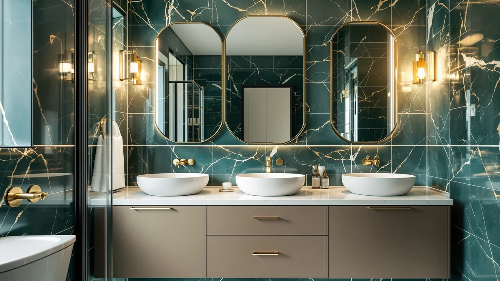

How to Install Bathroom Storage Rack: Complete Guide (2026)
Prices and picks verified as of September 2026. Independent, reader-supported reviews.


Things to Know Before You Buy
- Find a stud first. A rack anchored into wood framing holds more weight and stays put longer than one relying on drywall anchors alone.
- Match the anchor to the wall. Tile, drywall, and plaster each need a different anchor type, and using the wrong one is the most common cause of a rack pulling loose.
- Check the weight rating before you shop. A rack meant for towels won't hold a stack of wet bath products without sagging or ripping out.
- Renters have options. Adhesive-mount racks and over-the-door alternatives skip drilling entirely if your lease doesn't allow wall holes.
- Level it before you commit. A rack that's off by even a few degrees becomes obvious once you load it with bottles or folded towels.
Learning how to install a bathroom storage rack comes down to three things: finding solid backing, choosing the right anchor for your wall, and getting the bracket level before you drive the final screw. Skip any one of those steps and the rack works fine for a few weeks, then starts to sag under wet towels or pulls loose entirely.
You don't need a contractor for this job. A cordless drill, a stud finder, and about 45 minutes are enough to get a rack mounted securely on drywall, tile, or plaster. Below we walk through each step in order, plus the anchor choices and mistakes that determine whether the rack lasts five years or five months.
What You'll Need
- Supplies: wall anchors rated for at least 20 pounds, mounting screws sized to your rack's hardware, painter's tape and a pencil
- Tools: stud finder, cordless drill with driver and drill bits
Step 1: Find the Studs and Mark Your Mounting Spot
Before you touch a drill, figure out what's behind the wall. Run a stud finder horizontally across the area where you want the rack, moving slowly so it registers the edges of any framing. If you land on a stud, you've found your strongest anchor point and can plan the rack's screws around it.
Hold the rack (or its mounting bracket) against the wall at the height you want, then use a level across the top edge to make sure it's straight. Mark each screw hole with a pencil dot, and lay a strip of painter's tape over tile or glossy surfaces first so your pencil marks don't smudge or your drill bit doesn't skate. If your rack sits over a toilet or vanity, double check clearance so the door or drawers below still open fully.
This is also the point to think about plumbing and electrical runs hidden in the wall. Avoid mounting directly above or below outlets, and if you're working near a shower or tub surround, keep the rack's holes at least a few inches from any grout lines that could hide a pipe.
Step 2: Drill the Pilot Holes
Match your drill bit to the anchor you're using. Most plastic and toggle anchors list the correct bit size on the packaging, and drilling a hole even slightly too large will keep the anchor from gripping. If you hit a stud, you can often skip the anchor entirely and drive the screw straight into the wood with a smaller pilot hole.
On tile, set your drill to a slow speed without the hammer function, and let the bit do the work instead of pushing hard. Painter's tape over the mark keeps the bit from wandering across the glaze during the first few turns. Once you're through the tile, you can speed up slightly to finish the hole in the drywall or backer board behind it.
Drill each hole to the depth marked on the anchor packaging, usually indicated by a line on the bit or the anchor body itself. Stopping short means the anchor won't seat flush, and going too deep can crack tile or weaken the hole in soft plaster.
Step 3: Set the Wall Anchors
Plastic expansion anchors typically tap in with a hammer until the rim sits flush against the wall. Toggle anchors work differently: you fold the wings, push the whole assembly through the hole, then pull back until the toggle catches on the inside of the drywall before tightening.
If any anchor spins in place instead of biting into the wall, the hole is too large for that anchor. Pull it out, switch to a slightly bigger anchor size rather than drilling a fresh hole nearby, and try again. A properly seated anchor should feel snug and not wobble when you tug on it gently.
On plaster walls, expect a bit more resistance than drywall since plaster is denser and more brittle. Go slowly, and if you notice cracking spreading from the hole, stop and shift the anchor position slightly rather than forcing it through damaged material.
Step 4: Mount the Rack and Drive the Screws
Line the rack's mounting holes up with the anchors and start each screw by hand for a turn or two before switching to the drill. This keeps the screw from cross-threading in the anchor, which is an easy way to strip it before the rack is even hung.
Drive the screws in a crossing pattern rather than tightening one all the way before moving to the next. Going back and forth pulls the rack flush against the wall evenly, instead of pinching one corner while the opposite side still gapes. Stop tightening as soon as the rack sits snug against the wall.
Overtightening is the most common way to strip a plastic anchor or crack tile at this stage. If a screw suddenly spins freely after resistance, back it out, check the anchor, and replace it if it's damaged rather than continuing to force it.
Step 5: Level, Tighten, and Test the Load
Set a level across the top of the rack one more time now that it's fully mounted. Small adjustments are easier to catch here than after you've loaded it with towels or bottles. If one side sits slightly higher, loosen that screw a quarter turn, nudge the bracket, and retighten.
Give every screw a final check with the drill on low torque, since the mounting process can loosen earlier screws slightly as later ones are driven in. Confirm there's no wobble when you press down or pull outward on the rack.
Load it with what you actually intend to store, whether that's folded towels, shower products, or a mix of both, and watch how it holds over the first few days. A rack installed correctly won't shift, sag, or pull away from the wall even at its full rated weight.
Common Mistakes to Avoid
Most failed rack installations trace back to one of a handful of avoidable mistakes. Skipping the stud finder is the biggest one: drywall anchors alone can hold a light rack, but add wet towels and toiletries and the extra weight pulls the anchors out over time. Whenever a stud falls within reach of your layout, use it for at least one mounting point.
Using the wrong anchor for the wall type causes almost as many problems. A plastic anchor rated for drywall won't hold in hollow plaster and lath, and a light-duty anchor asked to support a fully loaded towel rack will eventually fail regardless of how carefully you installed it. Check the anchor's weight rating against what you plan to store, not just what the rack itself weighs.
Rushing the tile-drilling step is another frequent issue. Drilling at full speed without painter's tape to stabilize the bit often cracks the glaze or sends the bit skittering across the surface, leaving a scratched, uneven hole. Slow, steady pressure works better than force.
Finally, skipping the level check seems minor until the rack is fully loaded and visibly crooked. A few minutes with a level before you drive the final screws saves you from redoing the whole installation later, and it's the difference between a rack that looks intentional and one that looks like an afterthought.
Our Top Picks
Once your rack is mounted, these picks fill in the gaps it can't cover, from overflow storage under the sink to a no-drill option for renters who want extra hanging space without touching the wall.

Editor's Pick
Under Sink Organizer 3-Tier Thickened
The HERJOY organizer's three tiers use the vertical space a wall rack can't reach, making it a natural companion under the sink.
$68.99
Check Price on Amazon
Best Value
Liuoud 5 Pack Shower Caddy
This adhesive caddy needs no drilling at all, so it's a practical way to test a layout before committing to a permanent rack.
$19.99
Check Price on Amazon
Premium Choice
Lae Nuvole Adhesive Cabinet Door
For renters who can't drill into the wall, this adhesive cabinet organizer adds hanging storage without leaving a mark.
$13.89
Check Price on AmazonDo I need to hit a stud to install a bathroom storage rack?
Not always.
What anchors work best for installing a rack on tile?
Plastic expansion anchors sized to your screws work on tile as long as you drill slowly with a masonry bit and start the hole with painter's tape to keep the bit from wandering.
Frequently Asked Questions
Do I need to hit a stud to install a bathroom storage rack?
What anchors work best for installing a rack on tile?
How much weight can a wall-mounted bathroom storage rack hold?
Can I install a bathroom storage rack without drilling into tile?
How long does it take to install a bathroom storage rack?
Verdict
Once you know how to install a bathroom storage rack correctly, the process comes down to finding solid backing, matching the anchor to your wall, and checking level before the final screw goes in. Skip the stud finder or grab the wrong anchor and even an expensive rack will eventually pull loose under normal use. Follow the five steps above and a $15 anchor kit will outlast the rack itself.
If you want to round out the storage around your new rack, the HERJOY under-sink organizer we featured above adds a three-tier option for everything the rack doesn't have room for, from spare toiletries to cleaning supplies. Pair the two and you've covered both wall and floor storage without cluttering the counter.